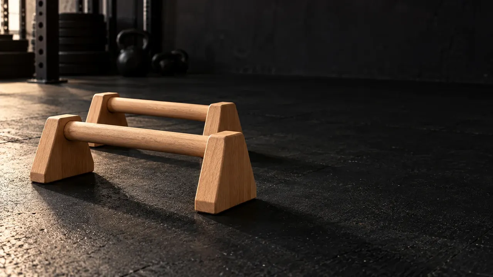

Parallettes vs. parallel bars
Parallettes are commonly short handles placed near the floor. They support push-ups, holds and leg lifts. Taller parallel or dip bars have a different height and often serve full dips. Similar names do not make these products interchangeable.

Handles can change wrist position compared with a flat-palmed floor push-up. Comfort varies; equipment does not treat wrist pain.
Five types of parallette exercise
- Incline or regular push-up: Keep the handles on an even, nonslip surface and lower only as far as you control.
- Support hold: Press down through the handles and support some or all of your weight for a short hold.
- Tuck hold toward L-sit: Bend your knees first, then extend one leg before trying both.
- Pike push-up: Elevate your hips and build overhead pushing strength gradually.
- Handstand and planche: Advanced skills needing substantial strength, appropriate space and potentially coaching.
Check handle stability and grip before loading your weight. Stop for sharp wrist or shoulder pain.
Which drill fits your level?
| Current level | Starting movement | Example volume | Progress when... |
|---|---|---|---|
| Beginner | Supported push-up and foot-assisted support | 2 × 4–8 reps; 2 × 10–15 second holds | You can move and balance with control |
| Intermediate | Full push-up and tuck hold | 2–3 × 5–10 reps; 2–3 × 10–20 second holds | Shoulders and trunk stay stable |
| Advanced | L-sit progressions, deeper pike work or balance skills | Adjust reps and hold time to form | You progress without pain |
The levels and numbers are examples, not a test or universal requirements.
Choosing a pair of parallettes
Check base stability, handle size, floor space and height for your intended movement. WATHBA lists steel-base parallettes with wooden grips and an all-wood option. Read each actual product page and ask for current dimensions; material alone does not make one version better for every athlete.
Parallettes questions
Are parallettes only for advanced athletes?
No. Supported push-ups work for many beginners, while L-sits and balance skills can challenge experienced athletes.
Do they cure wrist pain?
No. A different grip can feel more comfortable for some people, but persistent pain deserves professional assessment.
Can I perform dips on them?
It depends on the height, stability, clearance and rated load of that exact pair. Taller parallel bars are commonly used for full dips.
Sources and editorial note
These example progressions use general training principles from ACSM's resistance-training guidance. A small published wrist-position study examines different hand positions in push-ups; it does not establish a treatment or injury-prevention claim for parallettes.